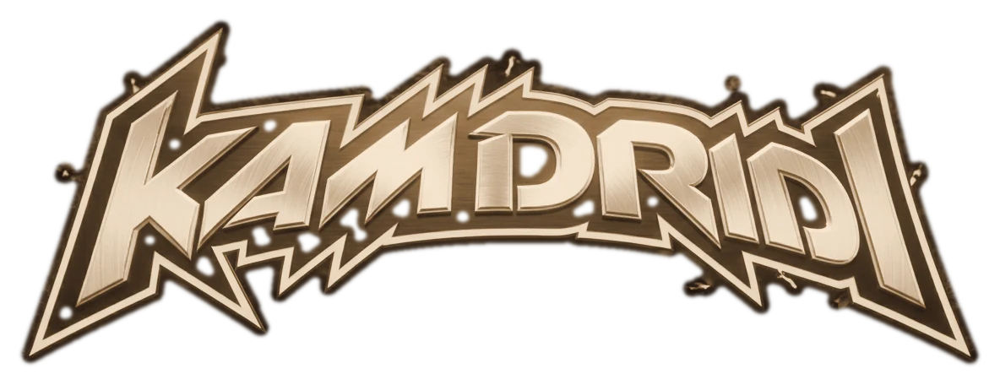
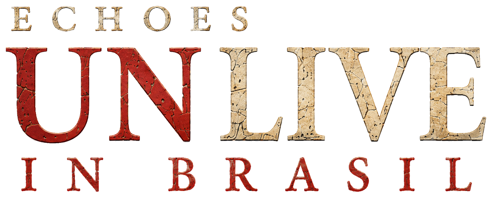

Edição Deluxe
Box deluxe + vinil
Apresentação de coleção com estojo premium, disco preto e cartão da edição.

KAM DRIDI · ECHOES · 2026 · EDIÇÃO EXPANDIDA

Rock melódico reimaginado em versões semi-acústicas.
Apresentação de coleção com estojo premium, disco preto e cartão da edição.
Páginas internas com imagens ao vivo, créditos e o universo visual da Edição Expandida.
Apresentação refinada do álbum com visual principal, faixas bônus incluídas e pedido direto.
Pré-vias de 36 segundos. As faixas completas serão conectadas às plataformas oficiais no lançamento.
ECHOES UN LIVE IN BRASIL apresenta o repertório em versões semi-acústicas, com luz quente, vozes do público e a força emocional do rock melódico.
A história e as imagens agora formam uma única sequência: o palco, o contato com os fãs e a atmosfera íntima da noite.
Uma fotografia de banda sem instrumentos — presença, identidade e a energia urbana de São Paulo.
Acompanhar o projetoECHOES UN LIVE IN BRASIL · EDIÇÃO EXPANDIDA · 2026
Entre para a lista oficial e receba as próximas faixas, imagens e notícias do projeto.